发动机的更换
拆卸程序
- 1.断开蓄电池负极电缆。蓄电池负极电缆的断开和连接
- 2.排泄空调系统。制冷剂回收和重新加注
- 3.排空发动机机油。发动机机油和机油滤清器的更换
- 4.排放冷却液。冷却系统的排放和加注
- 5.进气歧管盖»拆下–进气歧管盖的更换
- 6.增压空气冷却器出气管»拆下–增压空气冷却器出气软管的更换
- 7.曲轴箱强制通风软管/管/管路»拆下–曲轴箱强制通风软管/管/管路的更换
- 8.空气滤清器出气管»拆下–空气滤清器出气管的更换
-
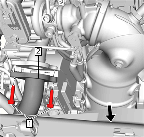9.增压空气冷却器进气软管（2）@增压器»断开–增压空气冷却器进气软管的更换
- 10.蓄电池»拆下–蓄电池的更换
-
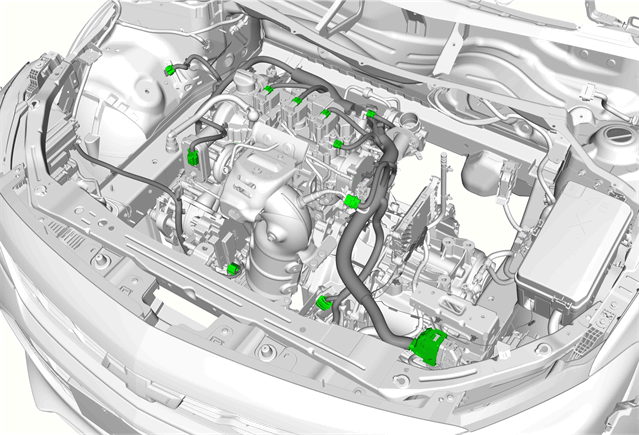11.断开发动机周围线束电气连接器。
-
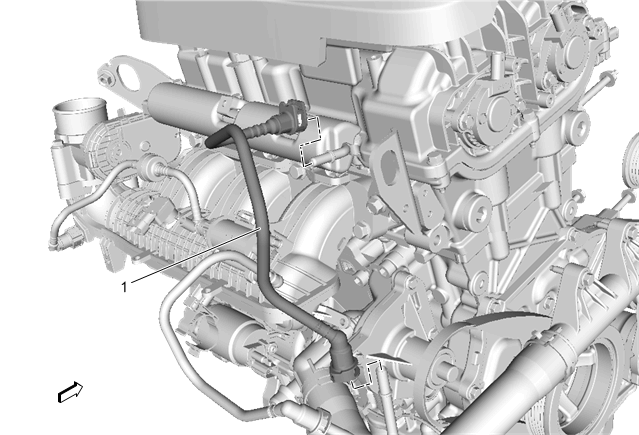12.燃油供油软管（1）@燃油喷射导轨»断开 –燃油供油软管的更换
-
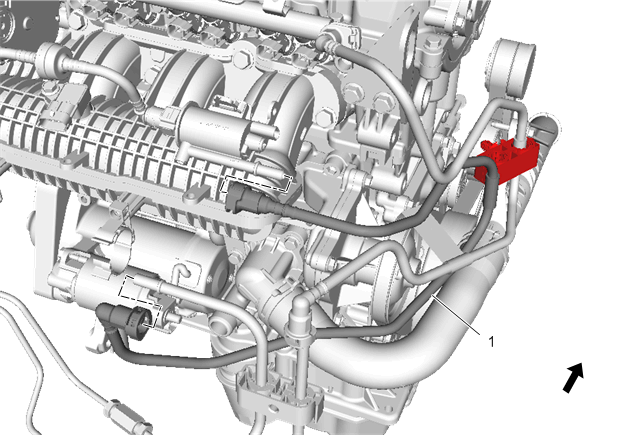13.蒸发排放软管（1）@蒸发排放碳管吹洗电磁阀»断开–蒸发排放软管的更换
-
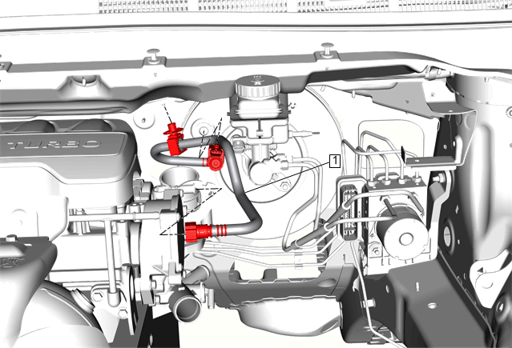14.制动助力器真空管（1）@真空泵»断开–制动助力器真空管的更换
-
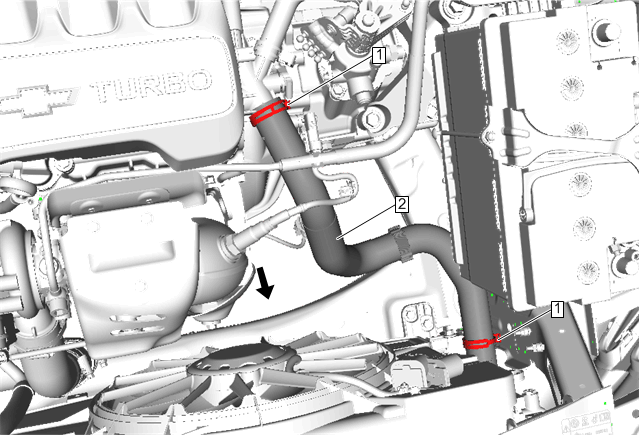15.散热器进口软管（2）@发动机出水口»断开–散热器进口软管的更换
-
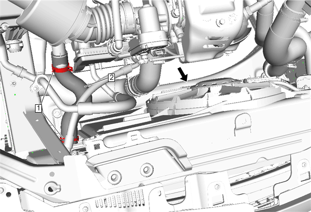16.散热器出口软管（2）@水泵进水管»断开–散热器出口软管的更换
- 17.散热器储液罐进口软管»拆下–散热器储液罐进口软管的更换
-
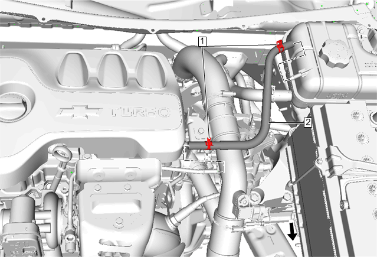18.发动机冷却液放气软管（2）@增压器冷却液供液管»断开–发动机冷却液放气软管的更换
-
19.加热器进口软管（2）@出水口»断开–加热器进口软管的更换

- 20.空调压缩机和冷凝器软管@空调压缩机»断开–空调压缩机和冷凝器软管的更换
-
21.选档杆拉线（1）»断开–选档杆拉线的更换

-
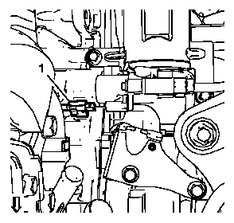22.辅助油蓄能器线束连接器（1）@ 变速器»断开
-
23.电气连接器（1）@变速器控制模块（TCM）»断开

- 24.加热器出口软管»拆下–加热器出口软管的更换
- 25.前排气管»拆卸–前排气管的更换
- 26.拆下左侧前轮驱动半轴。前轮驱动半轴的更换－左侧
- 27.拆下不带中间轴的右侧前轮驱动半轴。前轮驱动半轴的更换－右侧
- 28.前车架»拆卸–传动系统和前悬架支架的更换
- 29.缓慢降下前车架支撑工具，降下前悬架横梁。
-
30.在动力系统总成下方放置一个发动机支撑台。注意:在动力系统拆卸过程中，在车辆后部放置一个千斤顶支撑车身。
- 31.可在前部车架和油底壳之间使用木块，以使动力系统在拆卸过程中保持水平。
- 32.支撑台定位好后，完全升起支撑台以接触到动力系统总成。
-
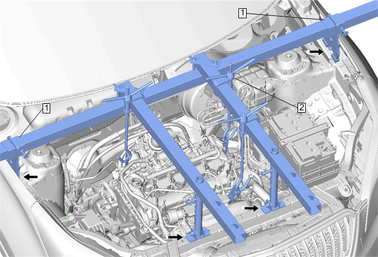33.用发动机支撑夹具吊起发动机。发动机支撑夹具
-
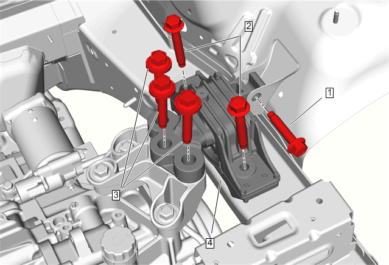34.变速器支座 (4)»拆下–变速器支座的更换
-
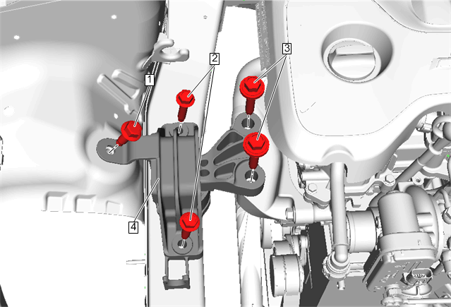35.发动机支座 (4)»拆下–发动机支座的更换。
- 36.必要时，断开电气连接并重新定位线束。
- 37.小心降下发动机台并用举升机升起车身，直至发动机变速器离开车身。
- 38.拆除发动机支撑夹具。
- 39.从变速器上分离发动机。变速器的更换
- 40.将发动机安装到适合的发动机支架上。
安装程序
- 1.将变速器安装到发动机上。变速器的更换
- 2.将动力系统支撑台放置在车辆下面。
- 3.将动力系统提升至车辆下的正确位置。
- 4.支撑台定位好后，如果需要，将车辆降到动力系统上。
- 5.发动机支座 (4)»安装–发动机支座的更换。
- 6.变速器支座 (4)»安装–变速器支座的更换
- 7.用发动机支撑夹具吊起发动机。发动机支撑夹具
- 8.安装左侧前轮驱动半轴。前轮驱动半轴的更换－左侧
- 9.安装不带中间轴的右侧前轮驱动半轴。前轮驱动半轴的更换－右侧
- 10.前排气管»安装–前排气管的更换
- 11.加热器出口软管»安装–加热器出口软管的更换
-
12.电气连接器（1）@变速器控制模块（TCM）»连接
- 13.辅助油蓄能器线束连接器（1）@ 变速器»连接
- 14.前车架»安装–传动系统和前悬架支架的更换
- 15.降低车辆。举升和顶起车辆
-
16.选档杆拉线（1）»连接–选档杆拉线的更换
- 17.空调压缩机和冷凝器软管@空调压缩机»安装–空调压缩机和冷凝器软管的更换
-
18.加热器进口软管（2）@出水口»连接–加热器进口软管的更换
- 19.发动机冷却液放气软管（2）@增压器冷却液供液管»连接–发动机冷却液放气软管的更换
- 20.散热器储液罐进口软管»安装–散热器储液罐进口软管的更换
- 21.散热器出口软管（2）@水泵进水管»连接–散热器出口软管的更换
- 22.散热器进口软管（2）@出水口»安装–散热器进口软管的更换
- 23.制动助力器真空管（1）@真空泵»连接–制动助力器真空管的更换
- 24.蒸发排放软管（1）@蒸发排放碳管吹洗电磁阀»连接–蒸发排放软管的更换
- 25.燃油供油软管（1）@燃油喷射导轨»连接–燃油供油软管的更换
- 26.连接发动机周围线束电气连接器。
- 27.发动机一部分线束接头在蓄电池下方，连接之后安装蓄电池。蓄电池的更换
- 28.增压空气冷却器进气软管（2）@增压器»安装–增压空气冷却器进气软管的更换
- 29.空气滤清器出气管»安装–空气滤清器出气管的更换
- 30.曲轴箱强制通风软管/管/管路»安装–曲轴箱强制通风软管/管/管路的更换
- 31.增压空气冷却器出气管»安装–增压空气冷却器出气软管的更换
- 32.进气歧管盖»安装–进气歧管盖的更换
- 33.必要时，连接电气线束。
- 34.如果更换了新发动机或大修了发动机，则执行发动机预润滑程序。发动机预润滑
- 35.如果发动机未更换或大修，则加注发动机机油。发动机机油和机油滤清器的更换
- 36.加注空调系统。制冷剂回收和重新加注
- 37.加注冷却液。冷却系统的排放和加注
- 38.连接蓄电池负极电缆。蓄电池负极电缆的断开和连接